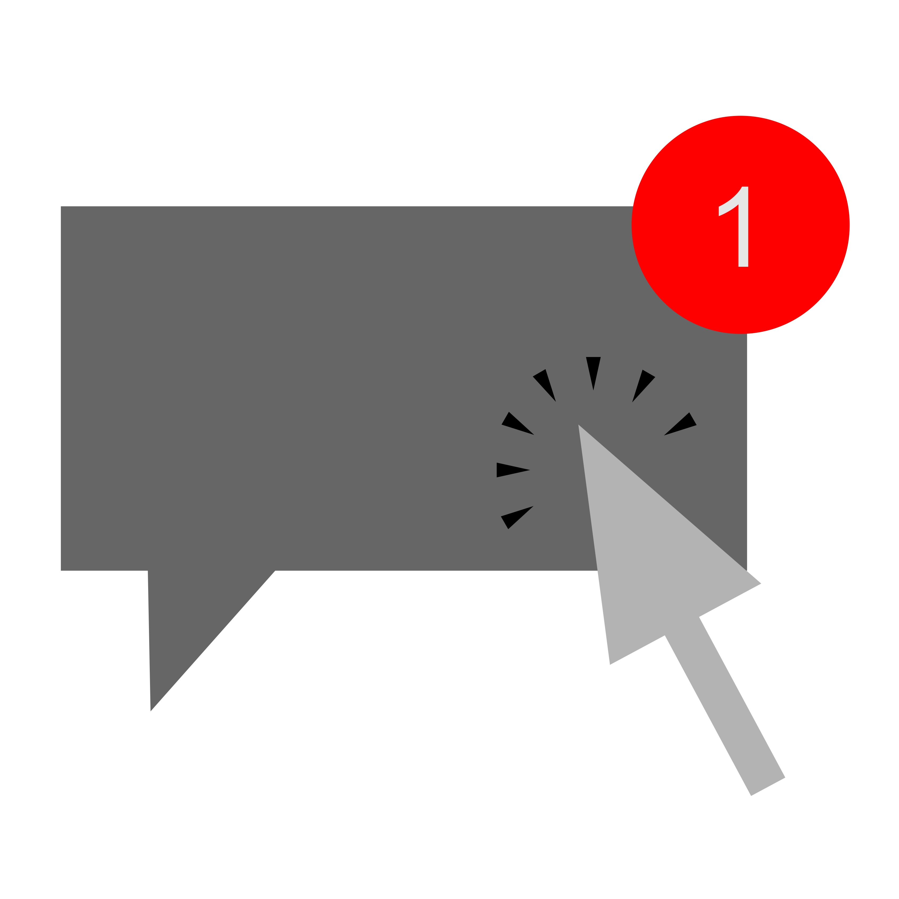
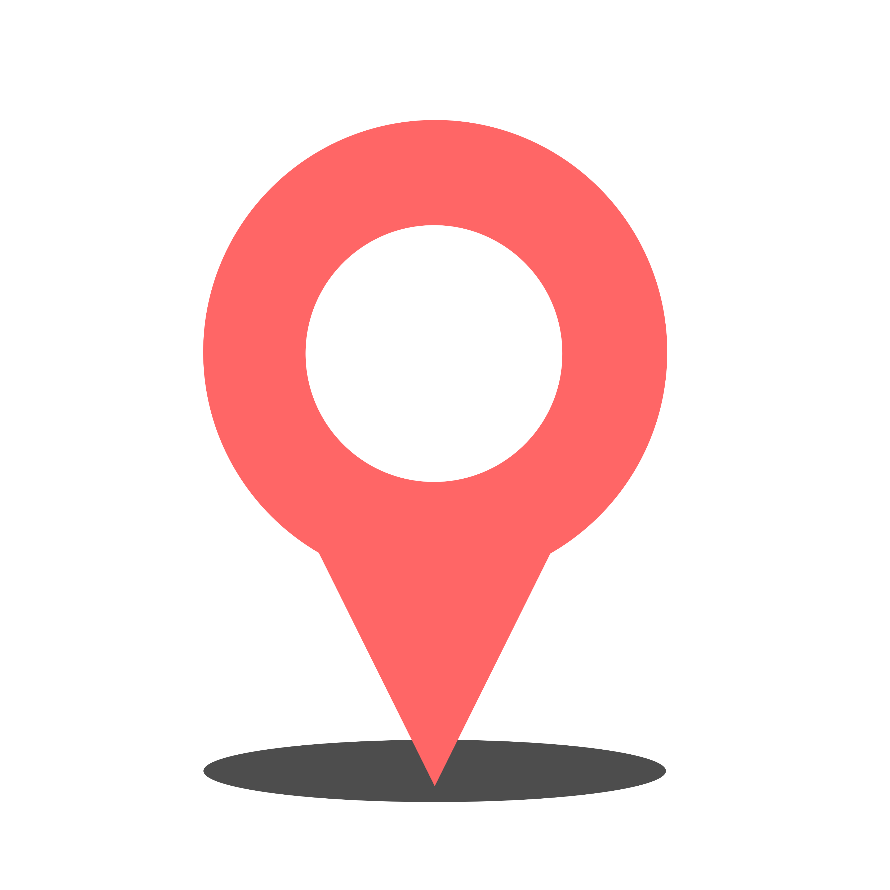
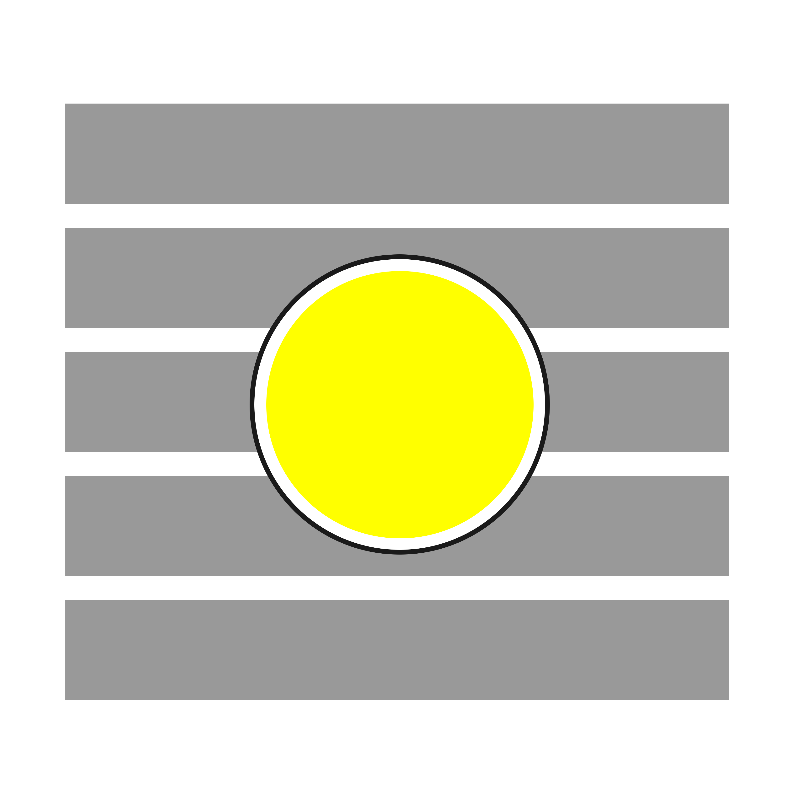
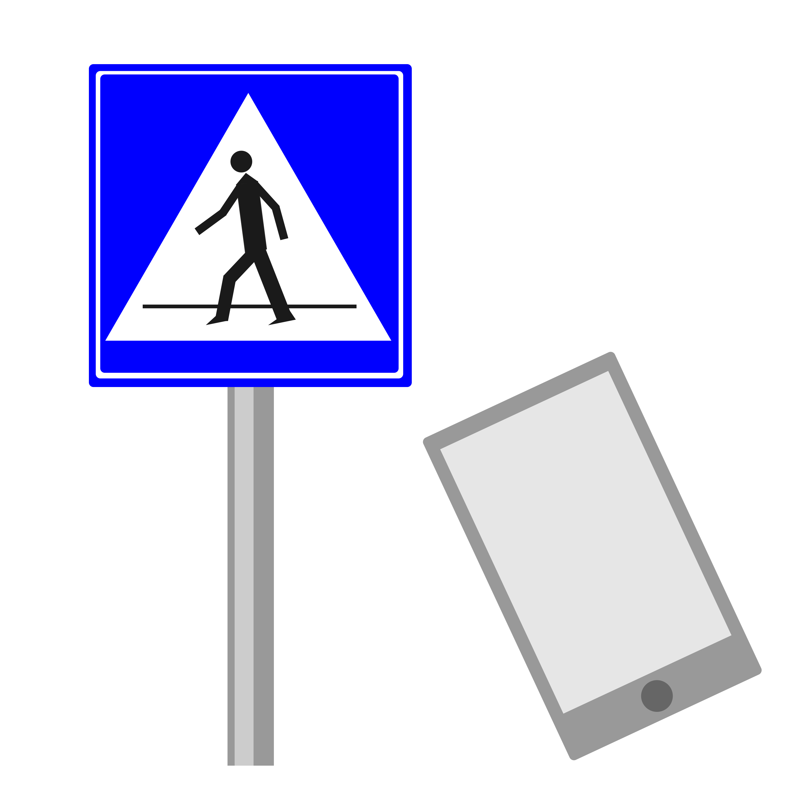
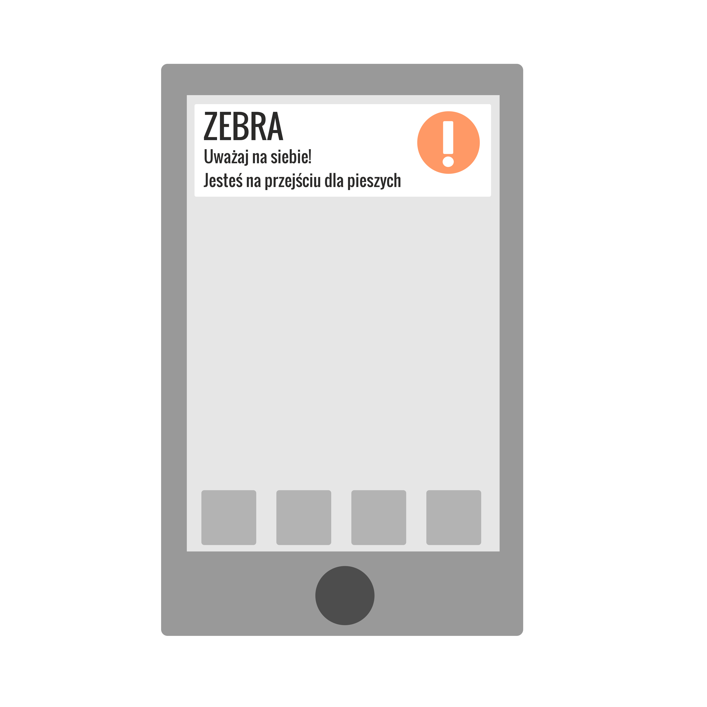

Jak działa aplikacja?
|  |
|---|
Krok 1. Włączenie powiadomień |
|
Główną funkcjonalnością aplikacji jest wyświetlanie powiadomień na ekranie Twojego telefonu, więc jest to podstawowa prośba, na którą musisz wyrazić zgodę. Aplikacja nie zbiera od użytkowników żadnych danych poza tymi, dotyczącymi lokalizacji urządzenia. Są to niezbędne dane, ponieważ budowa Zebry opiera się nie na fizycznych nadajnikach sygnału Bluetooth, a na współrzędnych geograficznych. |
|  |
Krok 2. Lokalizacja Twojego urządzenia |
|
Kiedy już umożliwisz aplikacji przesyłanie powiadomień, Twoje urządzenie będzie mogło zostać zlokalizowane. Po co? Algorytm działa na zasadzie porównywania Twojego położenia z lokalizacjami przejść dla pieszych, zapisanych w pamięci aplikacji. Jeśli zbliżysz się do któregoś z nich na kilka metrów, program to zarejestruje i przekaże informację o tym do silnika powiadomień, który wyśle stosowne ostrzeżenie. |
|  |
Krok 3. Monitorowanie położenia |
|
Dzięki udostępnieniu położenia, aplikacja jest w stanie śledzić Twoją lokalizację, odświeżając ją co jakiś czas. To pozwala zachować w miarę aktualną pozycję, co zwiększa dokładność działania mechanizmu ostrzegania. W chwili, kiedy faktycznie znajdziesz się w zasięgu przejścia, Zebra będzie o tym wiedziała. |
|  |
Krok 4. Znalezienie się w pobliżu przejścia dla pieszych |
|
Czuwając nad Twoim położeniem, aplikacja może porównywać Twoją aktualną długość i szerokość geograficzną do wartości zapisanych wewnątrz aplikacji. W chwili, gdy pierwsza wartość zbliży się na określony dystans do którejś z wartości, określającej pasy, zostanie to zarejestrowane, co spowoduje zaalarmowanie systemu powiadomień. |
|  |
Krok 5. Wysłanie powiadomienia na Twój telefon |
|
To wydarzenie spowoduje uruchomienie całego mechanizmu. Myślą przewodnią, która towarzyszyła przy tworzeniu Zebry, była ochrona osób, zbyt zaabsorbowanych swoim smartfonem, by patrzeć na to, co dzieje się wokół. Takie osoby nazywa się potocznie technologicznymi zombie. W skrajnych przypadkach mogą stanowić zagrożenie nie tylko dla siebie, ale również dla innych uczestników ruchu. Właśnie dlatego aplikacja generuje powiadomienia. Mają one za zadanie ostrzeżenie takich osób. Być może dzięki takim środkom, choć na chwilę oderwą wzrok od ekranu telefonu i rozejrzą się w obie strony. |